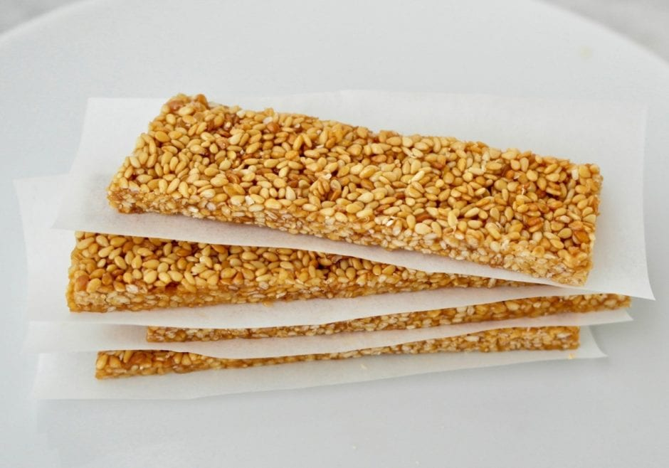

Pasteli

These are cereal bars made out of sesame seeds
binded together by honey. Very healthy, but
very tasty. A perfect dessert! Makes 20 bars.
Original recipe from
Olive Tomato.
Ingredients
- 1 1/2 cup sesame seeds
- 1/2 cup honey
In short, you will need a 2:1 ratio of sesame seeds
and honey.
Instructions
- Toast the sesame seeds. You can spread them in
a pan and put them in the oven at 325 degrees
Fahrenheit or you can toast them in a pan.
You want them to get a bit of color, but
not too brown.
-
Pour the honey in medium sauce pan and heat
the honey until it starts to bubble. Let
it boil for 4-5 minutes. If you have a food
thermometer, you boil until honey reaches a
temperature of 125 deg C.
-
Pour the toasted sesame seeds, lower the heat
and stir. Making sure all ingredients are
mixed well together. Heat the mixture for 2-3
minutes more (the more it cooks, the crunchier
it will be, but be careful of scorching.) To
check if it is ready, take a small amount
and drop it in a glass with water, it should
stay in a ball, if it spreads out it still needs
to be heated.
-
Line a pan with slightly greased parchment paper
and pour the sesame mixture. Place another sheet
of parchment paper on top (also greased) and
spread out the sesame-honey mix with a rolling
pin.
-
Remove the top sheet carefully and let it cool
for about 15 minutes. Cut into small bars.
-
Let them cool completely. Remove and store
with parchment paper between them in airtight
container.
Return to home.